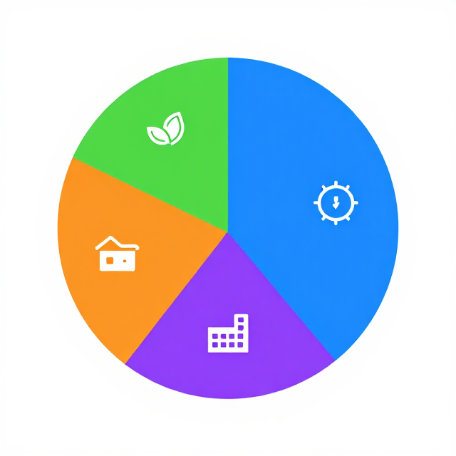
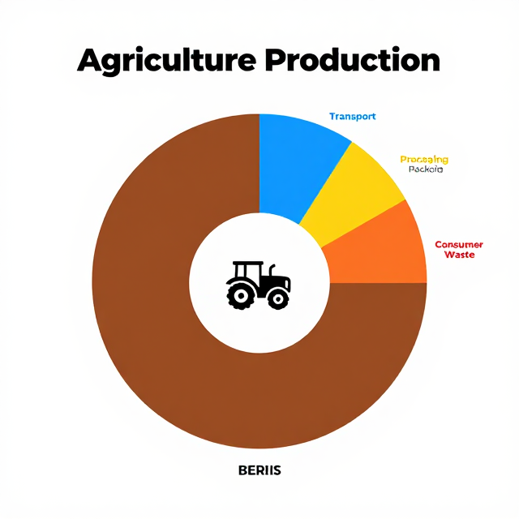

從我的便當,到地球的餐桌
永續飲食｜國中 13–15 歲
四節課,四個大問題
每天 210 億頓飯,你的選擇是其中一份
我的便當在「哇」什麼?
食物的全球足跡
哪一份便當最永續?
A 牛肉丼
🥩
B 雞腿便當
🍗
C 豆腐排
🥗
憑直覺投票,先記住你的選擇 — 結束時我們會回頭看
食物佔全球溫室氣體 26%

同樣 100g 蛋白質,差 38 倍
吃在地一定比進口低碳?

把「吃」放進系統圖
從餐桌到地球餐桌
EAT-Lancet 與臺灣現實
EAT-Lancet 行星健康飲食
臺灣的餐桌數字
南方國家的代價
剩食補位:食物銀行
誰來負責?
永續飲食的治理兩難
紅肉課碳稅,你贊成嗎?
贊 成
- 外部成本內部化
- 引導行為
- 促進健康
反 對
- 懲罰低收入家庭
- 干預飲食自由
- 衝擊畜牧業
折 衷
- 稅收回饋農民轉型
- 補貼蔬果
- 分階段實施
「好答案」的要件:是否考慮健康、自由、公平、產業四面?是否有資料支持?是否聆聽另一方?
開放延伸:除了課稅,還有哪些政策工具?(補貼、標示、教育)
四角色協商:校園每週一蔬食日
政 府
公衛、淨零、產業考量;政策工具與配套
畜牧農民
產業生計、轉型援助、文化價值
家 長
營養擔憂、家庭預算、文化習慣
學生代表
氣候未來、口味偏好、選擇自由
10 分鐘協商,目標是產出一個四方都能接受的方案
有機 = 永續?素食 = 永續?
「有機」
減少化肥農藥對土壤好,但單位產量低 → 需更多土地;若砍森林換有機,氣候帳虧大
「素食」
大量進口加工素料、反季節蔬果可能更高碳;重點是全食物、當季、在地、少浪費
「個人不重要」
高所得族群人均紅肉減半,可顯著降低全球 GHG / 土地 / 水壓力 — 集體尺度有政策意義
永續是光譜,不是二選一的標章
我能做什麼?
WSA 行動方案設計
班級永續飲食小內閣
學生不是配角,是共同治理者
菜單長
- 提建議
- 調查口味
- 蔬食日設計
採購長
- 調查在地食材
- 季節作物表
- 聯繫小農
廚餘長
- 每日秤重
- 製作折線圖
- 分析浪費熱點
倡議長
- 對外溝通
- 家長通訊
- 校刊投稿
提案會送到學校永續委員會 — 民主練習,不是辦家家酒
WSA 四面向整合
治 理
- 永續飲食委員會
- 學生代表
教 學
- 跨科主題週
- 自然 × 家政 × 社會
設 施
- 廚餘秤重
- 當季食材採購
- 蔬食日
社 群
- 串聯在地小農
- 家長會 / 食物銀行
四個輪子同時轉,學校才真的在教永續
我們學校的 30 天計畫
| 面向 | 第 1–10 天 | 第 11–20 天 | 第 21–30 天 |
|---|---|---|---|
| 治 理 | |||
| 教 學 | |||
| 設 施 | |||
| 社 群 |
必填:引用 ≥ 3 個本課數據 ・ 至少 1 個可衡量指標(如:廚餘減 20%)
後設認知 3-2-1
3 件學到的
最讓你驚訝的事實?
2 件想問的
還沒解決的疑惑?
1 件要做的
這週要採取的行動?
能覺察自己在想什麼,比學會新知識更重要
三個關鍵字,一起記住
佔全球 GHG 26%
遠方的代價
對未來地球的投票
你不必成為完美的素食者,也不必放棄家鄉味
有意識地吃、願意問問題、和同學家人一起行動。